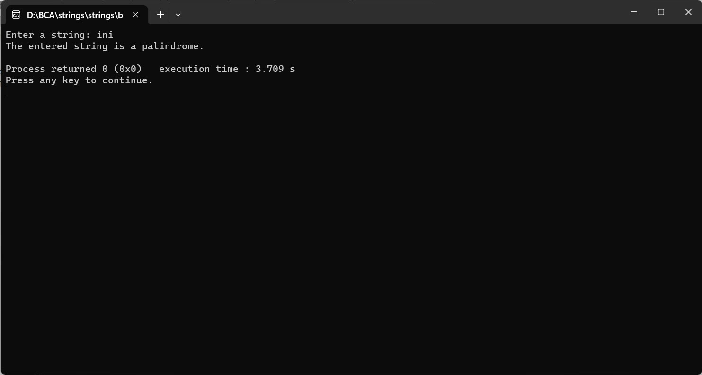

ENTER THE STRING FROM USER AND CHECK ITS PALINDROME OR NOT
#include
#include
#include
int main() {
char inputString[1000];
int i, j, len, isPalindrome = 1;
printf("Enter a string: ");
fgets(inputString, sizeof(inputString), stdin);
// Remove the newline character from the string
inputString[strcspn(inputString, "\n")] = '\0';
len = strlen(inputString);
// Convert the string to lowercase for case-insensitive comparison
for (i = 0; i < len; i++) {
inputString[i] = tolower(inputString[i]);
}
// Check for palindrome
for (i = 0, j = len - 1; i < len / 2; i++, j--) {
if (inputString[i] != inputString[j]) {
isPalindrome = 0;
break;
}
}
if (isPalindrome) {
printf("The entered string is a palindrome.\n");
} else {
printf("The entered string is not a palindrome.\n");
}
return 0;
}
